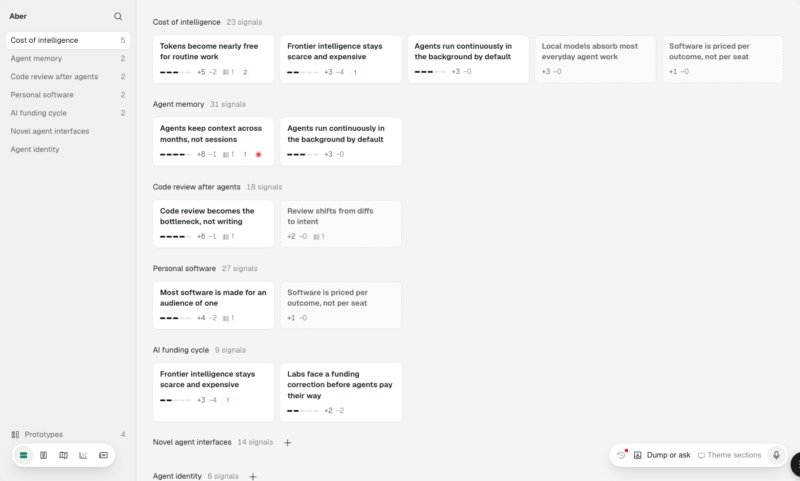
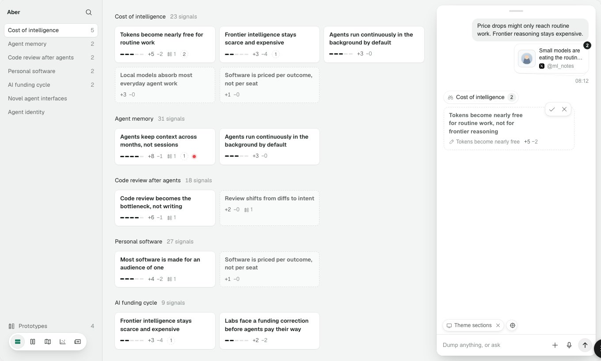
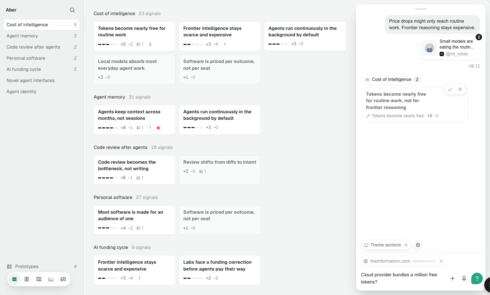
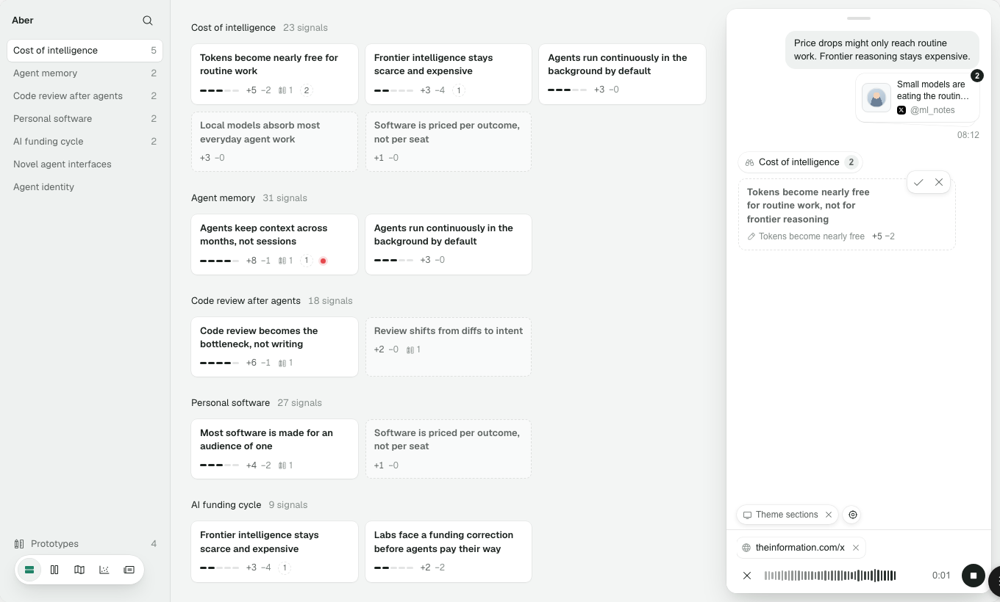
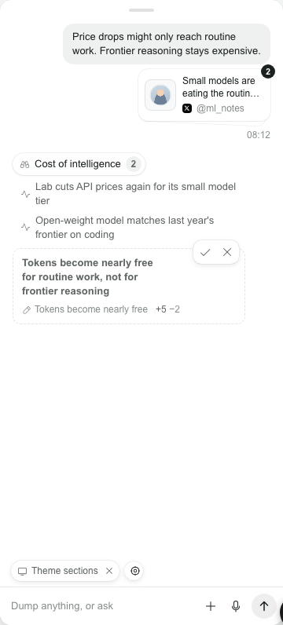
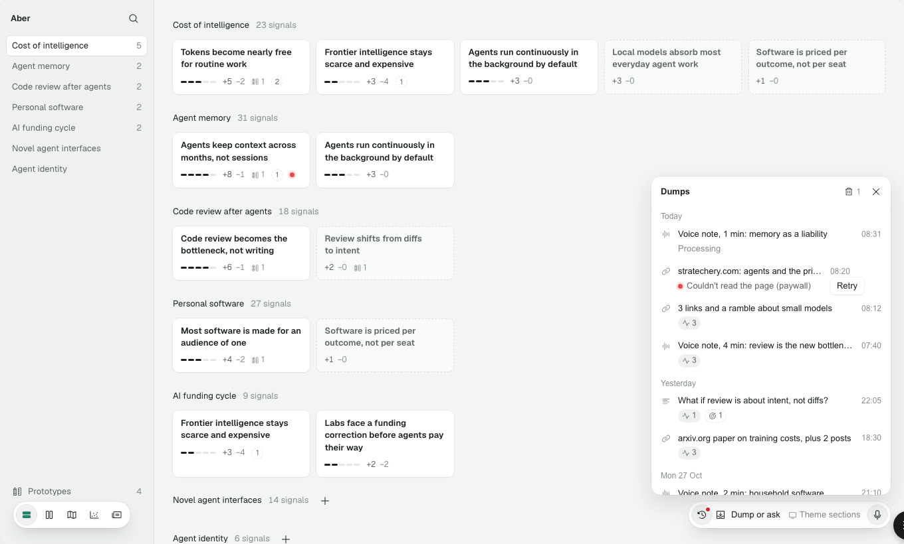

Proposed, round 2. How new things get into Aber, in the type-first default view. Capture now follows the app's real model: the "Dump or ask" pill at the bottom right grows into a chat column docked to the right edge. Everything you send is a dump, and the agent's reply shows what it filed and drafted. Making and linking happen in place. Objects use 06's decided components; the full view uses 08's main-area inset. Everything is live.
Decided 4 Nov: a new object left without a name but with content is kept as "Untitled", with Undo. Editing a draft's wording accepts it. Evidence is added with a + on each stance (Supports, Undermines).
Capture works through a pill that grows into a chat column. It's the app's best flow, but it's styled on its own terms. The rest of making goes through one modal: nine of the thirteen ways to make or link something open ask() (app/dialogs.tsx:13). Screenshots are from the jig at localhost:5181/app. The app at :5174 answered 502, because its API wasn't running.






| Flow | Opens as | Where | What's off |
|---|---|---|---|
| Dump or ask | Pill → docked column | ui/pill-study.tsx:440–451, :798–800; chat/parts.tsx:11–33 | Its own vocabulary: the bubble, theme token, card and "sees" pills aren't 06 objects. An X discards a draft (object-card.tsx:24). A green "?" on Send. Attach is a plus (pill-study.tsx:449). |
| Voice | The take, in pill or column | ui/pill-study.tsx:386–395 | An X discards the take (:390, against DI-009). Esc throws it away with no Undo (:489). |
| Dump log | Sheet from the pill | ui/dump-log.tsx | In the type-first view, the Dumps type in the rail lists the same thing. |
| New theme, theory, prototype | Centred modal | current-sidebar.tsx:74, :97; current.tsx:63 → dialogs.tsx:58 | A bare Name field; the only error is the browser's tooltip (required, :40); Cancel is an X beside Create (:44). |
| Rename | In place | ui/editable.tsx:6–19 | Esc keeps the edit (:16). A blank name saves as blank. |
| Rephrase a draft | Modal | chat/object-card.tsx:18 | DI-002 decided edit in place. |
| Add evidence, relationships, file, unfile, merge | Modals | panes.tsx:113, :137, :171; signal-merge.tsx:15–17 | Every signal listed unranked; option rows end in a chevron that doesn't expand (dialogs.tsx:38); two modals to link one theme. |
| Delete dump | Modal | dialogs.tsx:94 | The one modal that should stay; it has no X. |
Type in the composer and press Return; a "will" or "theory" in it also gets you a draft. Accept or discard drafts in the thread. Click any row to peek it, then Open. Press the crosshair, then click a card. Close the column (Esc) and use the pill's microphone. Make a theme with +, rename a title, and add evidence on a theory.
The right edge of the window at full size. Each one is live.
+ at the head of Themes. The new theme is already in the list and fills the main area, with the caret in its name.
Today a "?" turns Send into a green question mark. Green is the accent, so both options keep Send ink; the question is whether the glyph changes.
One glyph per meaning (03). Whether it's a dump or an ask is the agent's business; both are stored as dumps.
Tells you it will be answered, not just filed. It adds a glyph to the vocabulary for a distinction you didn't choose.
Today the pill's left segment opens a log sheet. In the default view, the Dumps type in the rail already lists every dump with its status.
A shorter pill. Scrolling the thread is the conversation's history; Dumps in the rail is the full record, with status in words.
A history button (⌘⇧L) that goes to Dumps. It's one hop from anywhere, but a second way into the same list.